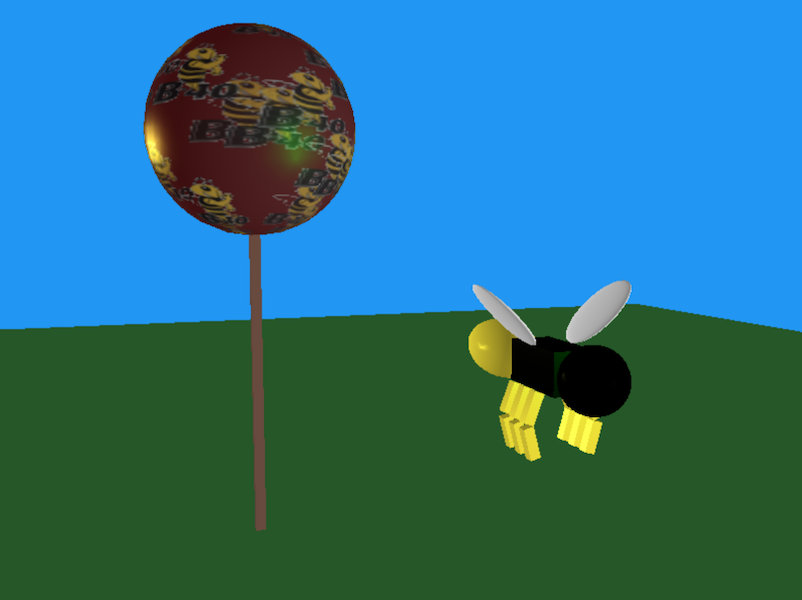

An animated bee1 scene constructed with primitive shapes in WebGL
UCLA CS 174A
Professor Demetri Terzopoulos
TA Sam Amin
Stewart Dulaney 904-064-791

Instructions:
- Animation is paused when this program starts, so first you should press ALT+a to play or pause animation.
- Press v to un-hide the heads-up-display text.
- Clicking and dragging spins the scene around while the camera stays still. If you'd like to spin around some other focal point, you can set one by flying the camera right up to a desired point and then pressing o.
- Fly the camera around the scene to adjust your vantage point using the keys w a s d to move in the plane that's along the ground, and the keys space and z to float up and down. At any time press r to reset the camera and vantage point back to the origin.
- The f key unfreezes the camera's rotation setting so you can aim it around while flying or sitting still. Move the mouse around away from the center of the window to steer, and press f again to stop this and to freeze the steering again. Any roll rotation is controlled separately with the comma and period keys.
- The keys ALT+n and ALT+g switch shading behaviors. ALT+n directly shows you normal vectors on shapes by interpreting X,Y,Z vectors as R,G,B colors. ALT+g toggles Gouraud shading vs Smooth Phong shading with textures.
- Press 1 and 2 to cycle through a live feed of important strings and values of the program -- the code for each Displayable object includes a function where it can provide these.
- The keys p and m cycle through a list of the coordinate axes (bases) you have listed down as worth drawing (at various points within your drawing routine).
- Have fun.
1: Inspired by my middle school mascot.